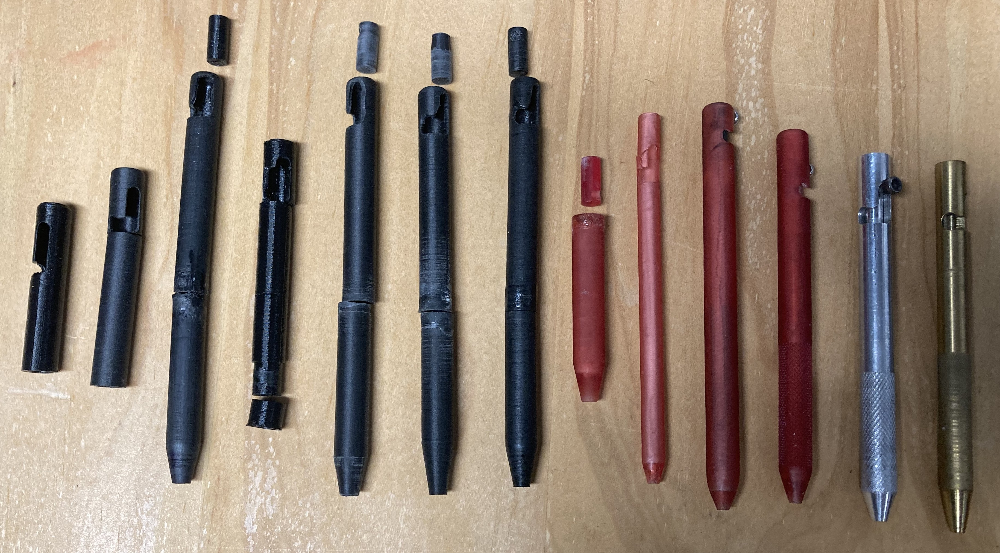
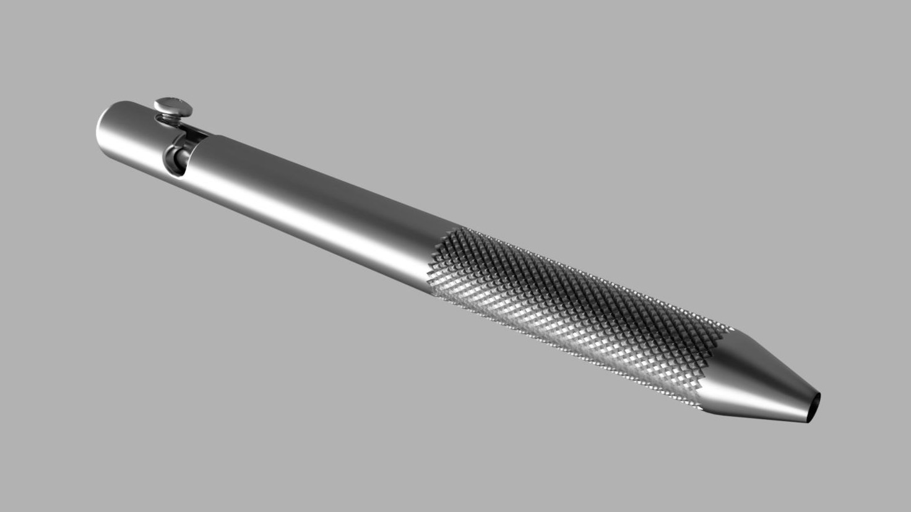
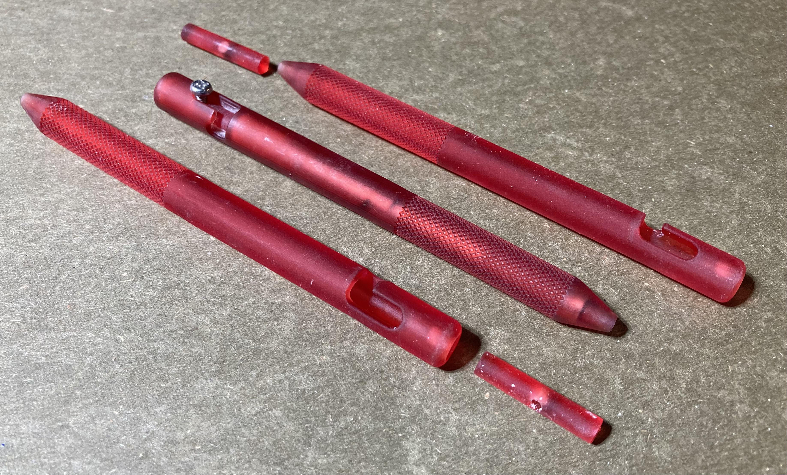

The Bolt Action Pen Project
 InstructableBeing really into EDC (Everyday Carry) and in need of a writing implement, I started to look for a nice pen. I then found that companies like Big Idea Design and Tactile Turn sold nice bolt action pens, but once I looked at the sticker price I decided that I would have to design and make my own. I started by learning how to use Fusion 360, and once I felt comfortable, I started thinking about the attributes that I wanted my pen to have.
Since I had no references for size, I decided to base the first Iteration off the Pilot G2, using the same diameter and length of the segments. After printing and plentiful sanding, I had my very own bolt action pen! After multiple months of use and multiple iterations with small changes, I noticed that the split body design was very prone to breaking when dropped. Later, while browsing through an online EDC store, I found that one of the pens was made up of only one part, and the piston that pushed down the ink cartridge simply came out the back. With newfound inspiration, I immediately set off to design a new pen.
After 2 successful iterations through the use of a resin printer and the one piece body, I was left with the final plastic product. This final plastic version of the pen included knurling for better grip and control, a Fisher space pen pressurized cartridge for consistent flow when writing in any direction, and a single m3 bolt strategically integrated for easy assembly and disasembly. I have been using this as one of my main pens for a few months now, and the only thing that I am dissatisfied with is the durability. While the previous iterations had a problem with breaking at the place where the pieces joined, when dropped, this version simply shatters into a bunch of pieces. I am then left with the only option of printing the pen again and using that new one. While inconvenient, the problem truly arises from the opportunity to innovate and improve while not acting upon it.
 After a few weeks of figuring out the lathe and mill at my school, I set out to finally make the pen which I had so longed for. Fully explained in this instructable, using Fusion 360, I went through the design and toolpath creation, ending up with files to go ahead and make your own! Outside of the design, I spent a while manufacturing this pen, due to its deep hole and slot for the bolt. For pictures of the manufacturing process, you can go to the Manufacturing Portfolio in the "Aluminum Bolt Action Pen" picture.
After a few weeks of figuring out the lathe and mill at my school, I set out to finally make the pen which I had so longed for. Fully explained in this instructable, using Fusion 360, I went through the design and toolpath creation, ending up with files to go ahead and make your own! Outside of the design, I spent a while manufacturing this pen, due to its deep hole and slot for the bolt. For pictures of the manufacturing process, you can go to the Manufacturing Portfolio in the "Aluminum Bolt Action Pen" picture.